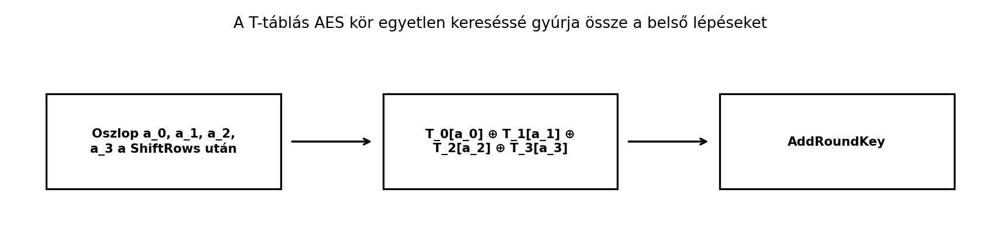

Az AES matematikai definíciója nem írja elő, hogyan kell a kódban ábrázolni az állapotot, és hogyan kell a kört kiszámítani. A naiv megvalósítás – külön SubBytes-tábla, ShiftRows, MixColumns – lassú, mert minden lépés külön memória-műveletet vagy logikai munkát igényel. A gyors szoftveres megvalósítások ezért a belső lépéseket T-táblákba gyúrják össze: egyetlen táblakeresés elvégzi a SubBytes, ShiftRows és MixColumns együttes hatását. Ezzel az AES-en belüli műveletlánc drámaian felgyorsul, ám a táblaindexek a titkos kulcs és a bemenet XOR-jától függnek, így a processzor cache-e szivárogtatja a kulcsot. Ez a fejezet bemutatja, miért kell a gyakorlatban hardveres utasítást (AES-NI, ARMv8) vagy konstans idejű bitslice megvalósítást választani.

A fenti ábrán egyetlen AES-kör lényege látható: a korábban megismert SubBytes (S-doboz), ShiftRows és MixColumns helyett négy táblaérték XOR-ja szerepel, majd a körkulcs hozzáadása. A táblaértékek az S-doboz kimenetét és a MixColumns mátrixszorzást egyszerre tartalmazzák. A módszer gyors, de éppen a memóriaelérési minta árulja el, melyik bájttal dolgozunk.
Definíció. A T-táblás AES-megvalósítás négy darab, egyenként 256 szavas táblát használ. Legyen az AES S-doboz kimenete a bájtra, a szorzás pedig a testbeli, az AES polinomjával. A táblák 32 bites szavakat adnak vissza:
Itt a négy bájt egy 32 bites szó négy bájtja, big-endian sorrendben. Ha a ShiftRows utáni állapot egy oszlopának négy bájtja , akkor a kör oszlopkimenete
majd következik az AddRoundKey.
Definíció. A cache-időzítési támadás olyan oldalcsatornás támadás, amely a processzor gyorsítótárának (cache) elérési időzítéseiből következtet titkos adatokra. A modern CPU-k a gyakran használt memóriaterületeket a cache-ben tárolják, így a találat (cache hit) sokkal gyorsabb, mint a tévesztés (cache miss). Ha egy program titkosfüggő módon indexel táblákat, a cache-vonal elérési mintája függ a titkos értéktől, és ezt a támadó precíz időméréssel megfigyelheti.
Definíció. A bitslice megvalósítás az AES állapotát nem bájtokként, hanem bitenként ábrázolja: darab blokkot párhuzamosan úgy tárolunk, hogy az -edik regiszter az összes blokk -edik bitjét tartalmazza. Az S-dobozt logikai kapuk (AND, OR, XOR) sorozatával számoljuk ki, nem táblakereséssel. Mivel nincs adatfüggő memóriaelérés, a futásidő gyakorlatilag független a bemenettől, ezért konstans idejű.
Definíció. Az AES-NI (Intel
Advanced Encryption Standard New Instructions) olyan x86-64
utasításkészlet-bővítés, amely hardverben hajtja végre az AES köreit. Az
utasítások, például AESENC, AESENCLAST,
AESKEYGENASSIST, egyetlen utasítás alatt,
mikroarchitekturális szinten hajtják végre az S-dobozt, a sor- és
oszlopműveleteket. Hasonló utasítások léteznek ARMv8 processzorokon is
(AESE, AESD, AESMC). Mivel az
utasítás futásideje nem függ az adattól és nincs táblakeresés, immunis a
cache-időzítési támadásra.
Tegyük fel, hogy a ShiftRows utáni állapot első oszlopának bájtjai . Szemléltetésképpen válasszunk egy egyszerű, nem a szabványos S-dobozt, hanem egy képzeletbeli -t, hogy a számolás áttekinthető legyen: legyen , , , . A -beli szorzás az azonosság, az xtime, . Az egyszerűség kedvéért a szorzást mostantól szimbolikusan jelöljük; a valós AES-ben az xtime polinomiális redukciót végez.
Ekkor a tábla bejegyzése -ra:
Vagyis egy 32 bites szó, amelynek négy bájtja rendre a fenti négy kifejezés. Hasonlóan számoljuk ki , és értékét. A kör kimenete az oszlopra ezek XOR-ja:
A négy tábla együttes mérete bájt, azaz 4 KiB. Ez a méret a mai L1 cache-ben elvileg elférne, de egy nagyobb program mellett, illetve a cache-sorok osztódása miatt a tábla egyes elemei ki-be kerülnek a cache-be pontosan aszerint, hogy melyik indexre hivatkozik az algoritmus. A kulcsfüggő indexek ezért cache-hit/miss mintát hagynak maguk után.
A T-táblás AES belső ciklusa minden körben 16 táblakeresést végez. Az indexek a bemenet és a körkulcs bájtjainak XOR-jából adódnak. Például az első körben a -edik bájt indexe:
ahol a nyílt szöveg bájtja, pedig a titkos kulcs egy bájtja. Mivel a támadó ismeri -t, az index megfigyelése feltárná -t; a cache-támadás azonban az indexnek csak a felső 4 bitjét látja, ahogy alább kiderül.
A cache-időzítési támadás azt használja ki, hogy a T-tábla bejegyzései 4 bájtosak, tehát egy 64 bájtos cache-sorba 16 bejegyzés fér. Az index felső 4 bitje határozza meg, melyik cache-sorhoz tartozik a kért bejegyzés. A támadó tehát nem közvetlenül az indexet, hanem annak felső 4 bitjét figyeli meg időzítésből. Az első körben a cache-vonal , ami csak a felső nibble-jétől függ: minden lehetséges értékre kiszámítható a várt cache-vonal, és a helyes jelölt felső 4 bitje statisztikailag kiemelkedik a zajból. Ez kulcsbájtonként a felső 4 bitet adja ki (összesen 64 bitet); az alsó 4 bitet az első kör indexei sosem árulják el, ehhez a második kör táblaeléréseit kell elemezni, vagy a maradék -es teret más módon szűkíteni.
Bernstein 2005-ös cache-timing támadása (ellenőrzendő évszám) ezt az elvet használta: a támadó egy szerveren mért időzítéseket az AES titkosítás közben, és kulcsfüggő korrelációkat keresett. Osvik, Shamir és Tromer később kifinomultabb módszert adott, a prime+probe technikát: a támadó feltölti a cache-t saját adattal, megvárja, míg az áldozat fut, majd megméri, mely cache-sorokat rúgta ki az áldozat. Ezzel a támadó pontosan látja, mely T-tábla-sorokat érte el az áldozat, és ebből a kulcsot rekonstruálja.
A gyakorlati támadás lépései:
A támadás elleni védekezés három útja:
A felhőszolgáltatók processzorait több virtuális gép osztja meg. A hypervisor ütemezi a virtuális processzorokat, de a cache fizikailag közös. Egy támadó, aki ugyanazon a fizikai magon futó, másik bérlő virtuális gépével osztozik, a prime+probe módszerrel feltérképezheti az áldozat AES-titkosításának T-tábla-eléréseit. Ez a forgatókönyv a T-táblás AES-t használó, régebbi kriptográfiai könyvtáraknál komoly kockázatot jelent.
A védekezés itt is a hardveres AES vagy a konstans idejű megvalósítás. A modern könyvtárak (például az OpenSSL, a BoringSSL) AES-NI-t használnak, ha a processzor támogatja; fallbackként több platformon konstans idejű (vektorpermutációs vagy bitslice) kódot, a libsodium pedig az AES-GCM-et csak hardveres támogatás mellett kínálja (ellenőrzési igény: könyvtárverziónként és platformonként eltér).
Az AES-NI utasítások az Intel és AMD x86-64 processzorokon érhetők
el. Az AESENC egyetlen utasításként végzi el az S-dobozt, a
ShiftRows-t, a MixColumns-t és az AddRoundKey-t, míg az
AESENCLAST az utolsó, MixColumns nélküli kört. A
kulcsütemezéshez AESKEYGENASSIST tartozik. Az utasítások
szeparáltan, adatfüggő elágazás nélkül futnak, ezért időzítése konstans.
A használat feltétele, hogy az operációs rendszer és a könyvtár
ellenőrizze a CPUID képességet.
Az ARMv8 architektúra AESE, AESD,
AESMC és AESIMC utasításokat ad az AES-hez. A
64 bites ARM processzorokon ezek hasonlóan hardveres gyorsítást és
konstans időt biztosítanak.
A bitslice technika akkor előnyös, ha nincs hardveres gyorsítás, vagy ha egyszerre sok blokkot kell titkosítani. A CTR üzemmód párhuzamosítható: 8, 16 vagy akár 64 blokk egyszerre feldolgozható. A bitslice megvalósításban minden blokk azonos bitpozíciójú bitjeit egy regiszterben tároljuk. Az S-dobozt logikai kapukkal implementáljuk, ami így bitenként párhuzamosan fut minden blokkra. A módszer egy blokkra lassabb, mint a T-tábla, de sok blokkra hatékony, és teljesen konstans idejű.
A pontos számok processzorfüggők, ezért az alábbi értékek nagyságrendi becslések, ellenőrzendők. Egy modern, AES-NI-t támogató asztali processzoron az AES-128-GCM sebessége több GB/s, jellemzően 1–5 GB/s egyetlen magon. Ugyanez T-táblás szoftveres megvalósítással nagyságrendileg 100–200 MB/s körül mozog, tehát a hardveres gyorsítás 10–50-szeres sebességet ad. A bitslice megvalósítás CTR módban, sok párhuzamos blokkal, AES-NI nélkül is elérheti a GB/s tartományt, de egyetlen blokkra lassabb. A TLS 1.3 AES-GCM cipher-suite-ok ezért a gyakorlatban szinte mindig AES-NI-t használnak, ami a hálózati átvitelt is gyorsítja.
A leggyakrabban idézett valós fenyegetés a felhőbeli oldalcsatorna: egy támadó bérlő virtuális gépe ugyanazon a fizikai processzormagon fut, mint az áldozaté, így a cache-t megosztják. Ha az áldozat T-táblás AES-t használ – például egy régi OpenSSL-verzió vagy egyedi kód –, a támadó prime+probe mérésekkel rekonstruálhatja a kulcsot. Ezért ma a hardveres AES-t és a konstans idejű könyvtárakat tekintik alapkövetelménynek megosztott környezetben. Ez a tanulság: a kriptográfiai primitív matematikai biztonsága mit sem ér, ha a megvalósítás oldalcsatornás jeleket szivárogtat.
Az alábbi kód egy oktatási célú, nem éles T-tábla-modellt mutat be. Az S-dobozt szándékosan egyszerű, 4 bites értékekkel helyettesítjük, hogy a mechanika látszódjon.
# OKTATÁSI CÉLRA – NEM ÉLES HASZNÁLATRA
# A T-táblás AES oszlopkombináció elve, fiktív S-dobozzal
def xtime(x):
# GF(2^8)-beli 02-vel szorzás, AES-polinom: x^8 + x^4 + x^3 + x + 1
return ((x << 1) ^ (0x1B if (x & 0x80) else 0)) & 0xFF
def mul(a, b):
# egyszerű GF(2^8) szorzás, a = 01, 02 vagy 03 a példában
if a == 2:
return xtime(b)
if a == 3:
return xtime(b) ^ b
return b # a = 1
# Fiktív S-doboz: a valós AES-ben ez a szabványos S-doboz
S = {0x01: 0x10, 0x02: 0x20, 0x03: 0x30, 0x04: 0x40}
# T-tábla bejegyzés generálása (32 bites szó, big-endian bájtsorrend)
def make_T_entry(coefficients, a):
s = S[a]
return ((mul(coefficients[0], s) << 24) |
(mul(coefficients[1], s) << 16) |
(mul(coefficients[2], s) << 8) |
mul(coefficients[3], s))
# T_0 együtthatói: (02, 01, 01, 03)
# T_1: (03, 02, 01, 01), T_2: (01, 03, 02, 01), T_3: (01, 01, 03, 02)
T0_01 = make_T_entry((2, 1, 1, 3), 0x01)
T1_02 = make_T_entry((3, 2, 1, 1), 0x02)
T2_03 = make_T_entry((1, 3, 2, 1), 0x03)
T3_04 = make_T_entry((1, 1, 3, 2), 0x04)
oszlop_kimenet = T0_01 ^ T1_02 ^ T2_03 ^ T3_04
print(f"{T0_01:08x} XOR {T1_02:08x} XOR {T2_03:08x} XOR {T3_04:08x} = {oszlop_kimenet:08x}")Kimenet (saját futtatás, Python 3):
20101030 XOR 60402020 XOR 30506030 XOR 4040c080 = 304090a0Például (a fiktív mellett). A kimenet egy 32 bites szó, amely az oszlop négy táblaértékének XOR-ja. A valós AES-ben a táblák 256 bejegyzést tartalmaznak, és az S-doboz a szabványos értékeket adja. A kód célja kizárólag a T-tábla mechanikájának bemutatása.
1. feladat (A). Mutasd meg, hogy a T-táblás kör kimenete oszloponként valóban ekvivalens a SubBytes + ShiftRows + MixColumns sorozattal. Vázold a bizonyítást.
2. feladat (A). Adott egy cache-sor 64 bájt méretű, a T-tábla egy bejegyzése 4 bájt. Hány bejegyzés fér egy cache-sorba? Egy 256 bejegyzéses táblához hány cache-sor tartozik?
3. feladat (B). Írj egy függvényt Pythonban, amely egy fiktív S-dobozzal generálja a négy T-táblát 256 bejegyzésre, és ellenőrzi, hogy a T-táblás kör ugyanazt adja, mint a külön SubBytes+MixColumns. (A kód legyen rövid, oktatási célú.)
4. feladat (B). Tegyük fel, hogy egy támadó ismeri az első kör nyílt szövegét és méri a cache-vonalat, amely az index felső 4 bitjét azonosítja. Hány kulcsbájt-jelölt marad egyetlen mérés után egy adott bájtra? (Az S-dobozt nem használjuk, csak az indexet.)
5. feladat (C). Bizonyítsd be, hogy ha a T-tábla minden bejegyzését cache-szinten egyenletesen, az összes sort érintve olvasná a program, akkor a cache-időzítési támadás nem tudná megkülönböztetni a kulcsot. Fogalmazd meg, milyen feltétel szükséges ehhez.
6. feladat (D). Tervezz egy játék cache-szimulátort, amelyben egy T-táblás AES-titkosítás fut, és cache-hit/miss eseményeket rögzít. A támadó ismeri a nyílt szöveget és a cache-vonal találatokat. Írd le, hogyan rekonstruálnád az egyik kulcsbájtot.
Önellenőrzés – válaszok
1. feladat megoldása. A ShiftRows után az állapot oszlopai a megfelelő sorokba rendeződnek. A SubBytes minden bájtra -t alkalmaz. A MixColumns mátrixszorzás kifejezetten a együtthatókat használja. A T-táblák definíciója éppen ezeket az együtthatókat tartalmazza, oszloponként eltolva. Ezért a négy táblaérték XOR-ja a mátrixszorzás minden oszlopkoordinátáját előállítja. Az AddRoundKey ezután XOR-olódik.
2. feladat megoldása. Egy cache-sorba bejegyzés fér. Egy 256 bejegyzéses táblához cache-sor tartozik.
3. feladat megoldása. A kód a négy T-táblát 256 bejegyzésre generálja a szabványos S-dobozból (az S-dobozt a 10.4.3 szerinti inverz + affin lépésekkel számoljuk), és az oszlopokat a külön SubBytes + MixColumns számítással veti össze:
# OKTATÁSI CÉLRA – NEM ÉLES HASZNÁLATRA
def gmul(a, b):
r = 0
for _ in range(8):
if b & 1:
r ^= a
hi = a & 0x80
a = (a << 1) & 0xFF
if hi:
a ^= 0x1B
b >>= 1
return r
def sbox_value(a):
x = next((y for y in range(1, 256) if gmul(a, y) == 1), 0) # inverz, 0 -> 0
y = 0
for i in range(8):
bit = ((x >> i) ^ (x >> ((i + 4) % 8)) ^ (x >> ((i + 5) % 8))
^ (x >> ((i + 6) % 8)) ^ (x >> ((i + 7) % 8)) ^ (0x63 >> i)) & 1
y |= bit << i
return y
SBOX = [sbox_value(a) for a in range(256)]
def word(b0, b1, b2, b3):
return (b0 << 24) | (b1 << 16) | (b2 << 8) | b3
# T0[a] = (02*S, 01*S, 01*S, 03*S); a többi tábla ennek bájtciklikus eltoltja
T0 = [word(gmul(2, SBOX[a]), SBOX[a], SBOX[a], gmul(3, SBOX[a])) for a in range(256)]
def ror(w, n):
return ((w >> n) | (w << (32 - n))) & 0xFFFFFFFF
T1 = [ror(w, 8) for w in T0]
T2 = [ror(w, 16) for w in T0]
T3 = [ror(w, 24) for w in T0]
def column_ttable(col):
return T0[col[0]] ^ T1[col[1]] ^ T2[col[2]] ^ T3[col[3]]
def column_reference(col):
a = [SBOX[x] for x in col] # SubBytes
b = [gmul(2, a[0]) ^ gmul(3, a[1]) ^ a[2] ^ a[3], # MixColumns
a[0] ^ gmul(2, a[1]) ^ gmul(3, a[2]) ^ a[3],
a[0] ^ a[1] ^ gmul(2, a[2]) ^ gmul(3, a[3]),
gmul(3, a[0]) ^ a[1] ^ a[2] ^ gmul(2, a[3])]
return word(*b)
col = [0x00, 0x50, 0xA0, 0xF0] # a FIPS 197 példa első oszlopa ShiftRows után
print(f"{column_ttable(col):08x}", column_ttable(col) == column_reference(col))
print(all(column_ttable(c) == column_reference(c)
for c in ([a, b, 3, 7] for a in range(0, 256, 5) for b in range(0, 256, 7))))Kimenet (saját futtatás, Python 3):
5f726415 True
True4. feladat megoldása. Egy mérés az index felső 4 bitjét adja, az alsó 4 bit ismeretlen. Az egyenletből, ha ismert, a felső 4 bitje meghatározott, az alsó 4 bit szabad. Tehát jelölt marad, és az első körös mérések számának növelése ezen nem változtat, mert a cache-vonal csak -től függ.
5. feladat megoldása. Ha a program minden cache-sort sorra, ugyanolyan gyakorisággal olvas, akkor a cache-minta független a titkos adattól, így a támadó nem lát kulcsfüggő jelet. Ehhez az kell, hogy a táblaelérés sorrendje és halmaza konstans legyen, például minden sorhoz hozzáférjen a program, függetlenül az indextől. Ez gyakorlatilag a táblázat teljes bejárását jelentené minden körben, ami lassú.
6. feladat megoldása. A játék szimulátor az első körben rögzíti az indexek felső 4 bitjét cache-vonalként; a támadó minden lehetséges kulcsbájtra kiszámítja a várt cache-vonalat az ismert nyílt bájt alapján, és pontozza az egyezéseket:
# OKTATÁSI CÉLRA – NEM ÉLES HASZNÁLATRA
# Játék cache-szimulátor: az első kör j-edik táblaindexe i = p ^ k, a
# cache-vonal az index felső 4 bitje (16 bejegyzés / 64 bájtos vonal).
K_BYTE = 0xB7 # a támadó nem ismeri; tesztérték
def observed_line(p):
return (p ^ K_BYTE) >> 4
# Minden 256 jelöltre pontozás: hány megfigyelés egyezik a jóslattal
scores = [0] * 256
for p in range(256): # ismert nyílt szöveg bájtok
line = observed_line(p)
for cand in range(256):
if (p ^ cand) >> 4 == line:
scores[cand] += 1
top = max(scores)
best = [c for c in range(256) if scores[c] == top]
print("Legmagasabb pontszám:", top)
print("Döntetlen jelöltek száma:", len(best))
print("A döntetlen jelöltek felső nibble-je:", {"%X" % (c >> 4) for c in best})
print("A valódi kulcsbájt köztük van:", K_BYTE in best)Kimenet (saját futtatás, Python 3):
Legmagasabb pontszám: 256
Döntetlen jelöltek száma: 16
A döntetlen jelöltek felső nibble-je: {'B'}
A valódi kulcsbájt köztük van: TrueA 16 döntetlen jelölt ugyanazt a felső nibble-t () osztja; a helyes felső 4 bit kiderül, az alsó 4 bit az első körből nem. Ezért a teljes bájthoz a második kör mérései vagy kimerítő keresés (16 jelölt) kell.
A T-táblás AES-megvalósítás a SubBytes, ShiftRows és MixColumns lépéseket négy darab, egyenként 256 szavas táblába gyúrja össze, így egy kör oszloponként négy táblaérték XOR-jából és az AddRoundKey-ből áll. A módszer gyors, de a táblaindexek a titkos kulcs és a bemenet XOR-jától függnek, ezért a cache-időzítési támadás rekonstruálhatja a kulcsot. A támadók prime+probe vagy Bernstein-féle időzítésalapú módszerrel figyelik a cache-sorokat, és kulcsbájtokat hipotézisvizsgálattal azonosítanak. A felhőben osztozó virtuális gépek különösen kitettek ennek. A védekezés a hardveres AES-utasítások (AES-NI, ARMv8) vagy a konstans idejű bitslice megvalósítás, amely nem végez adatfüggő memóriaelérést. A hardveres AES nagyságrendekkel gyorsabb is, ezért a modern TLS-könyvtárak alapértelmezetten ezt használják.
Továbbvitt eredmény. A cache-időzítési támadás általános elvét és a Spectre-osztályú támadásokat a Cache-támadások és a Spectre-osztály alfejezetben részletezzük; a hardveres AES teljesítményét pedig a ChaCha20-Poly1305 és az AEAD-interfész alfejezetben használjuk a gyakorlati összehasonlításban. A gyakorlati szabály: titkos adattal soha ne indexeljünk szoftveres táblát, hanem hardveres utasítást vagy konstans idejű kódot használjunk.
A szöveg az AES FIPS 197 szabványban rögzített definíciójára, valamint a cache-timing támadások klasszikus szakirodalmára támaszkodik. A konkrét évszámok, a mért sebességnagyságrendek és az utasításnevek processzorgenerációnként változhatnak; ezeket a felhasználás előtt a gyártói dokumentációval ellenőrizni kell. A megadott URL-eket nem olvastuk, ezért azokra hivatkozásként nem támaszkodtunk.